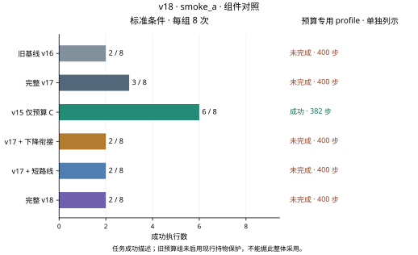
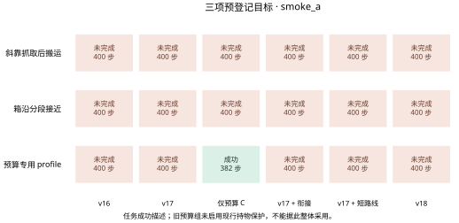

标准条件
预算专用 profile 0/1
最新完整阶段：smoke_a · 下列主数字仅统计标准条件，预算专用profile另列。
标准条件
标准条件
标准条件
标准条件
标准条件
标准条件
完整阶段累计 54 次评估执行。同一条件在不同版本和修订中重复，9个小测试条件包括8个标准条件与1个复用起点的配置profile，不能写成9个独立起点。
规划证书、保存输入回放、物理回放和完整任务成功是不同证据。旧权重冻结；本轮不做泛化训练，也不写论文。
执行前静态风险：执行前短路线离线检查中，旧 route / 12000036 的 step330 保存状态在新增候选上累计尝试73 work 后，out15 仅余58步，低于59步估计而被拒。current_rotation_inset 虽在4个保存状态获选，这不是4次任务成功，也不构成净改善证据；本轮效果必须以正式54次小测试及后续门槛为准。 查看离线记录。
已知诊断案例，不能作为独立泛化结论。预算profile复用旧6000005；六组按登记条件配对，两个单项修复只改变完整v17上的对应开关。旧预算组未启用现行持物保护，只能参考。
六组实际 v16 / v17 / 原预算 C / 衔接单项 / 短路线单项 / 完整 v18 的成功数为 2 / 3 / 7 / 2 / 2 / 2（各 9 个条件）。三个预登记目标全部未完成，完整 v18 相对 v17 丢失 12000036 的成功。9 条件只使用 8 个不同起点；这些刻意选择的困难案例不能当作整个项目或独立泛化成功率。三组实际基线的成功和步数均与历史记录一致。
下一步：保留本轮正负结果并不采用 v18；564 次扩展、三版各 240 次开发和 1440 次独立确认均不启动。后续先修复已定位的退步，再用相同门槛验证；不增加 400 步、不放宽保护、不训练或写论文。
实际 v17 在事件时钟 235 关爪、276 搬运、362 放置、390 释放，第 400 步成功。衔接单项将下降从 12 步延长到 19 步，之后各阶段晚 7 步；短路线单项维持原抓取，但新增候选未收敛，多耗 73 work，规划从 125 work / 9 次调用增到 198 / 13 次，最终仍选原 outward_15_inset。其执行各段时长相同，放置和释放均晚 4 步。完整 v18 两项叠加，373 才进入放置，400 仍未释放。此前静态晚期状态的失选是另一条轨迹，不混为本次失败。
下一步：候选方案：将连续交接限制为一个短过渡段，再恢复原下降进度规律；对新增路线设置不得挤占既有候选及放置、释放时间的验证预算。先分开做消融，不能靠减少原到位确认或释放时间补偿。上述方案尚未实现或验证。
smoke_a_handoff_diagnosis.json · smoke_a_route_findings.json · short_route_static_a.json
衔接单项和完整 v18 在两个 6000005 配置中都消除原 18 步回正，关爪由 339 提前到 324，搬运由 373 提前到 358。358–359 用 25 work / 2 次调用选中原 current_exact，并执行到 400；这不是新增内移候选的贡献。41 步搬运均保持抓持，关节余量至少 0.4165 rad。末帧位置误差 8.899 mm、角误差 0.04165 rad，但 9 mm / 0.08 rad 到位条件最长只连续满足 3 帧，末帧仅第 1 帧，未达到原 5 帧要求。物体已接近目标不等于末端连续到位。选择时名义估计需 59 步、剩余 41 步，最低命令安排 35 步只是一项过滤规则，无法保证真实完成。
下一步：在保持原精度与五帧确认条件下，单独检查 D2 下持物末端接近目标时的收敛和在途指令；为放置、释放保留原预算。只把满足现行条件的旧成功片段作为参考，不整体关闭保护或直接提前放置。
smoke_a_route_findings.json · smoke_a_handoff_diagnosis.json · smoke_a_route_diagnosis.json
新内移候选在本轮共获选 4 次：short 和完整 v18 各自在 demo87、12000011 第二次搜索获选。demo87 原本成功，结束由 300 提前到 283 步；12000011 仍未完成。新路线是改变端点家族，不能写为修复了 IK 求解器。旧保存状态中精确短路的 23 次拒绝为预算 8、局部 IK 未收敛 13、真实余量不足 2；更细的 IK 延续没有新增通过，因此未改求解容差。实际 full 的新候选搜索总 work 高于 v17，不能只报告更短的已选路线。
下一步：保留局部加速证据，但先控制失败候选的验证成本；优先保证已有可行路线不因探索耗尽预算。局部 IK 未收敛应继续标为未知，关节余量不合格的路线继续拒绝。
smoke_a_route_findings.json · smoke_a_route_diagnosis.json · short_route_diagnosis_a.json
斜靠 13000021 的完整 v18 到 337 才进入搬运，比 v17 的 332 晚 5 步，仍未选出完整可执行路线。箱沿 13000022 仍到 387 才进入下降，394 触发回正，400 结束于 PATH_RECENTER，尚未关爪；其短路线模块从未调用。不能把未进入模块的案例归因为短路线失败，也不能把持续等待结束或保护动作执行称为任务成功。
下一步：分别评估上游旋转与接近耗时、下降回正的连续参考。先用保存轨迹定位预算消耗，下一版每次只验证一个局部假设，避免新增模块相互抵消。
smoke_a_handoff_diagnosis.json · smoke_a_route_diagnosis.json
400 步、D2、106 个继承字段和现有保护保持；全关 9 条件 / 3442 步精确复现 v17，11 组组件与两份静态检查通过。衔接单项和完整 v18 各 138 条最终动作认证并实际提交；本轮没有触发新增关节或几何拒绝、脉冲回滚，其负路径仅有组件测试覆盖。静态诊断、动作核验和物理回放均不增加评估样本。预算组 7/9 的保护条件不同，不能据成功数整体回退采用。
下一步：继续把配置/机制正确、轨迹可复核和任务效果分开报告；只有预登记效果门槛通过，才进入开发与冻结后的全新起点确认。
mechanisms_a.json · components_a.json · handoff_static_a.json · short_route_static_a.json · smoke_a_handoff_diagnosis.json · smoke_a_budget_reference.json
预定 564 次；完整记录 0 次。
预定 720 次；完整记录 0 次。
预定 1440 次；完整记录 0 次。
小测试54次；消融564次；开发共720次，分别为v16、v17和v18各240次；独立确认1440次，须先冻结，再使用全新起点。未运行的数据不会填成结果。
| 阶段 | 成功数 / 执行数 | 门槛状态 | 原始依据 |
|---|---|---|---|
| smoke_a | 旧基线 v16 2/9 · 完整 v17 3/9 · v15 仅预算 C 7/9 · v17 + 下降衔接 2/9 · v17 + 短路线 2/9 · 完整 v18 2/9 | 结果门槛未通过 | 统计 · 条件 · 动作核验 · 物理回放 |
已通过的动作核验共 20,367 控制步；物理回放 54 回合、20,367 步。回放不增加成功率样本。
不把任意条件顺序连成趋势线，不对已知小测试附加泛化区间。每图提供600 dpi位图、矢量文件和绘图数据，来源哈希在图表目录中。


本页没有新增v18演示视频。查看v14原始对比演示 ↗，其中动作与结果仍属于历史v14实验，不能视为本轮成果。